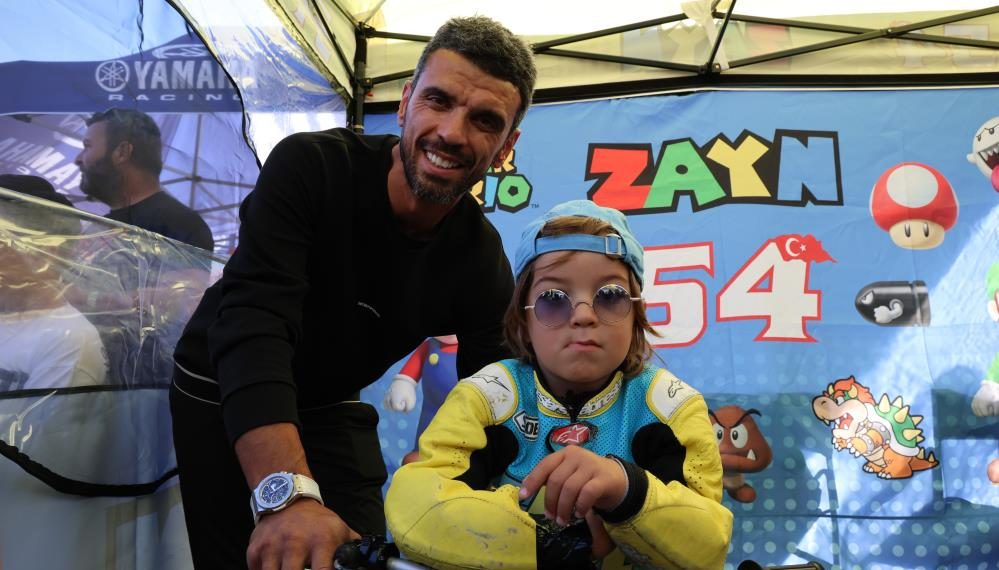

Motor Racing
Babasının izinden gidiyor...Kenan Sofuoğlu'nun minik oğlu Zayn Sofuoğlu'nun ilk galibiyeti!
Eski motosiklet dünya şampiyonu Kenan Sofuoğlu'nun 4 yaşındaki oğlu Zayn Sofuoğlu, bu hafta sonu İzmir'de gerçekleştirilen Türkiye pist & Supermoto Şampiyonası 3. ayak yarışında, kariyerinin ilk zaferine ulaştı.